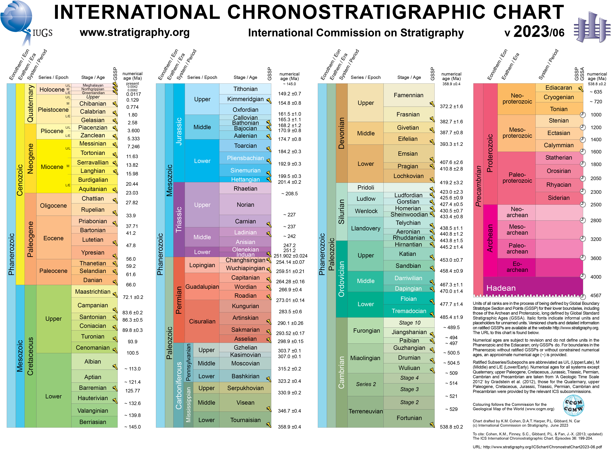

Il paleolitico è prima del mesolitico?
E prima dei Neanderthal?
Ma questo Quaternario quand’è?
Mettiamo in ordine il tempo!
In questa sezione vengono illustrate le cronologie del Quaternario
[Pleistocene - Olocene] e del Paleolitico [inferiore - medio -
superiore], in modo tale da garantire una piena conoscenza del periodo
ed eliminare quell’alone di confusione rimasto.
Prima di addentrarvi in scale numeriche, una sintetica descrizione del termine Quaternario così come si legge nell’Enciclopedia Treccani:
“Il periodo più recente della storia geologica della Terra, caratterizzato dalle modificazioni climatiche e dalle connesse e alterne fasi di espansione e ritiro dei ghiacci che ha subito il pianeta. Durante tale periodo, inoltre, si è andata delineando la linea evolutiva che ha portato allo sviluppo dell’uomo moderno.”
Clicca qui per leggere di più : https://www.treccani.it/enciclopedia/quaternario


Per una più dettagliata suddivisione del Pleistocene e dell’Olocene rimandiamo alla carta cronostratigrafica realizzata dall’International Commission on Stratigraphy : https://stratigraphy.org/chart#latest-version
